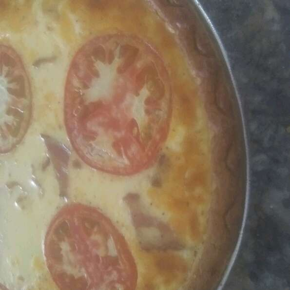

Growing up in the U.K. we used to make this all the time. Our guests have asked so many times for this recipe. Well here it is. I bake this quiche for friends at Christmas. Just wrap up in aluminum and voila! A tasty Christmas breakfast that they can wake up to.
Preheat the oven to 450 degrees F (220 degrees C). Press the puff pastry into the bottom and up the sides of a shallow casserole dish or 8 inch pie plate.
In a small bowl, beat eggs and milk with a fork until blended. Season with salt and pepper. Sprinkle a thin layer of Swiss cheese in the bottom of the pastry crust. Sprinkle crumbled bacon over the cheese. Pour the egg mixture into the pastry and sprinkle with the rest of the cheese. Arrange slices of tomato on top.
Bake in the preheated oven for 20 minutes. Reduce the oven temperature to 350 degrees F (175 degrees C). Continue to bake for an additional 30 minutes, or until crust is browned.